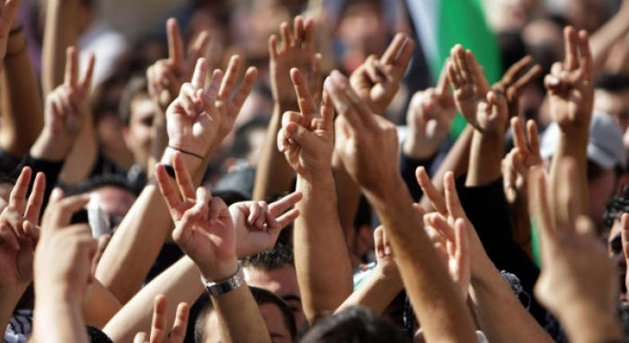
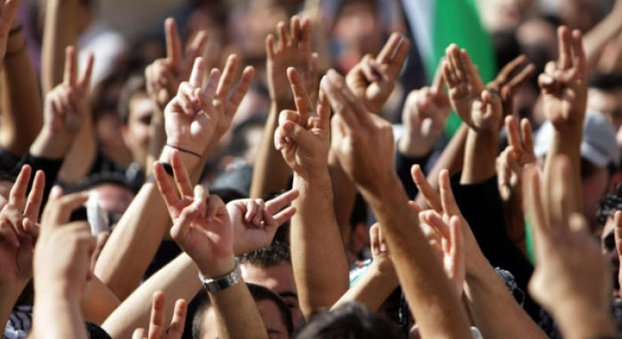

The Development Center Environmental Society aims to tackle the
world's interwoven economic, social, and environmental challenges
in all societies and at all scales. They promote public policies,
institutional innovations, and multi-stakeholder enterprises that
advance inclusive, resilient, and sustainable development for all
people in all countries, with no one left behind. The Center for
Sustainable Development and the society also emphasize the
importance of addressing these goals in a collaborative and
multi-stakeholder manner, recognizing the interconnectedness of
the challenges and the need for collective action to achieve
sustainable development for all. The importance of a Development
Center Environmental Society lies in its role in promoting social
action and mobilization of people to question the status quo and
advance policy change in response to global environmental changes.
These changes have significant social, economic, and environmental
impacts, with certain groups being more vulnerable to negative
effects. By fostering community action and local participation,
such societies contribute to a more environmentally sustainable
world where all people have equitable opportunities to live full,
healthy, and productive lives.
 
